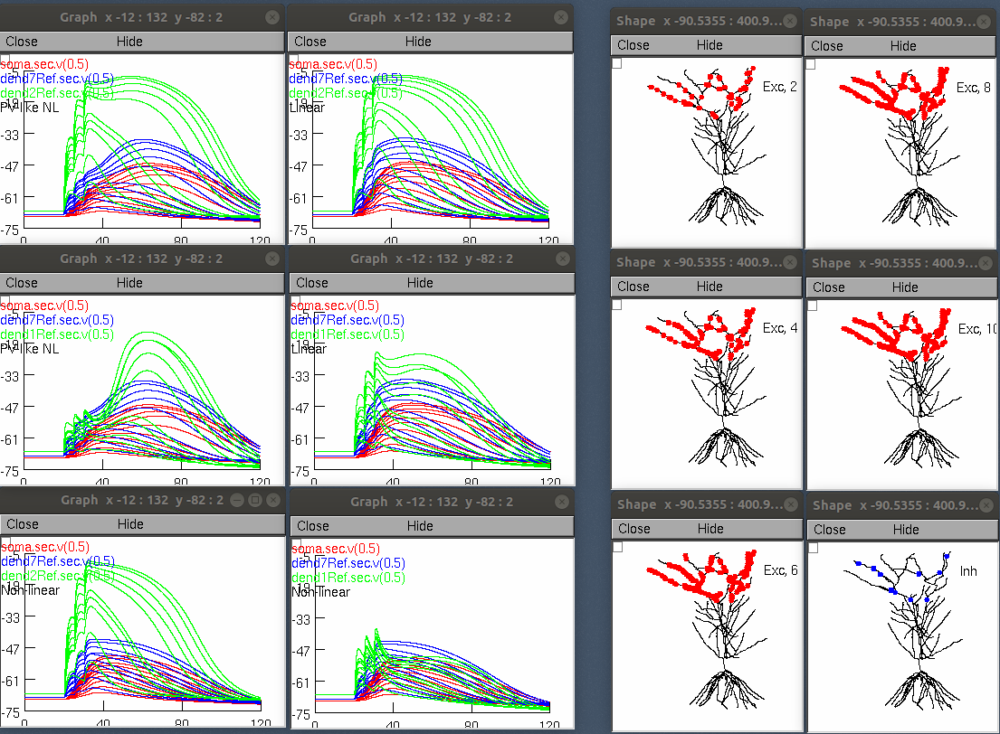

This code is by Jan M Schulz, University of Basel, 2017-2018
(Based on the model by Mark Cembrowski in Bloss et al., 2017)
associated with the paper:
Schulz JM, Knoflach F, Hernandez MC, Bischofberger J (2018) Dendrite-targeting interneurons control synaptic NMDA-receptor activation via nonlinear a5-GABAA receptors. Nat Commun 9:3576
http://dx.doi.org/10.1038/s41467-018-06004-8
Correspondence can be addressed to j.schulz@unibas.ch
The enclosed code distributes excitation and inhibition across the
dendritic arbor of a CA1 pyramidal neuron and tests the effect of altering
the properties of dendritic GABAergic inhibition on dendritic integration and
NMDA receptor-mediated depolarization.
To load in the NEURON simulation environment:
Download and install NEURON (http://www.neuron.yale.edu/neuron/) if needed
Compile the Alpha5_NMDA_CA1_oyr directory via mknrndll. For help, see:
MSWindows: https://www.neuron.yale.edu/neuron/static/docs/nmodl/mswin.html
MacOS: http://www.neuron.yale.edu/neuron/static/docs/nmodl/macos.html
Launch start_simulation.hoc.
To change between the different simulations (i.e. Fig.8, Fig.S8 and S9),
uncomment the respective hoc file in start_simultation.hoc
Running start_simulation.hoc in its default configuration (for example "nrngui start_simulation.hoc" on linux/unix) will lead after 10 minutes or so to images similar to figure 8 in the paper:

If you need more help running the model on your platform please consult:
https://senselab.med.yale.edu/ModelDB/NEURON_DwnldGuide.cshtml